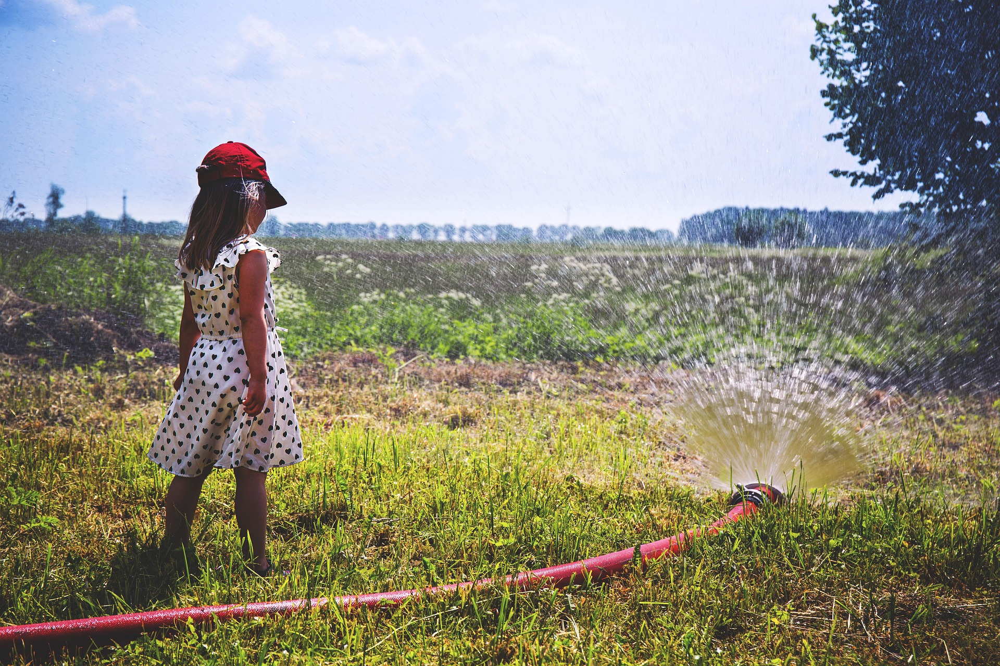

Franklin Breaks Record

The summer of 2017 goes down as Franklin’s second-hottest ever with its seemingly ceaseless parade of 90-plus degree days. Saturday is expected to be the first day this summer that the low temperature drops below 70 degrees. If so, it has been 73 days — a record — since the city felt so cool. The once-typical late-in-the-day cooling-off periods have disappeared, and if future summers mimic this year’s, then we can expect worsening weather.